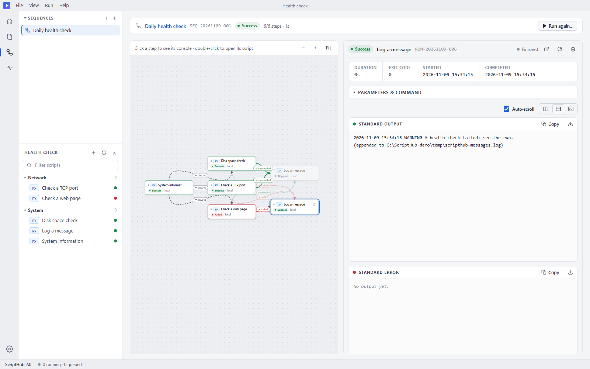
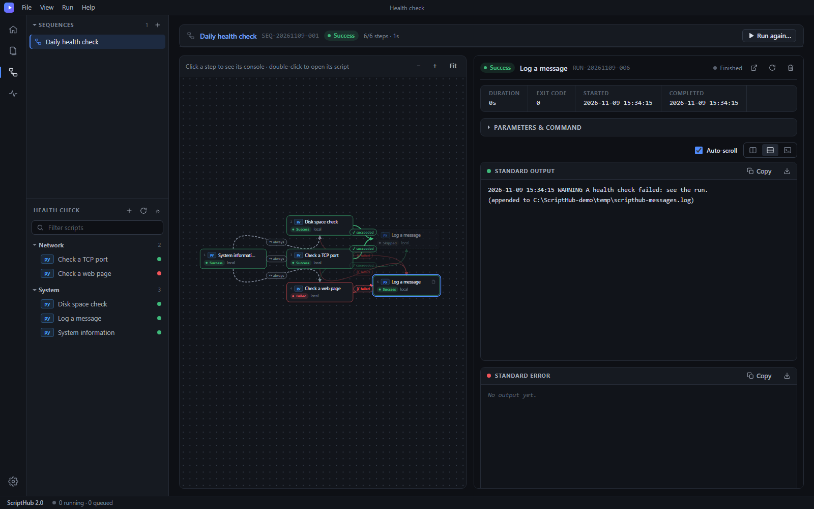

Your admin scripts, with forms, logs and history
Point ScriptHub at a folder of Python, Bash or batch scripts. Parameters become a form, every run is logged, and scripts run on this PC or on Linux servers over SSH. No database, no Redis, no Celery.
Download for Windows View on GitHub

What you get
Forms from your scripts
Parameters are declared in a small YAML comment block inside the script, so the script stays the single source of truth.
Saved values and history
Presets, recent runs, live logs and run history with retention, all stored as plain files.
Local or over SSH
Run on this computer or on remote Linux hosts using your system ssh. Nothing is run through a shell locally.
Trace and step debugger
See which line is running, or step through Python and Bash scripts with breakpoints.
Sequences
Chain scripts on a diagram with success, failure and always arrows. Pause, hold a step, or run one box alone.
Desktop or browser
Its own window with a tray icon, or a local web app. A portable Windows zip brings its own Python.
Project files
Pack a script folder, its sequences and presets into one .scripthub file and open it anywhere.
Just Django
Python 3.10+ and Django 5 are the only requirements. MIT licensed.
A script describes itself
import argparse
parser = argparse.ArgumentParser()
parser.add_argument("--database", required=True)
parser.add_argument("--retention-days", type=int, default=30)
args = parser.parse_args()
# --- scripthub ---
# name: Database Backup
# parameters:
# - name: database
# type: text
# required: true
# - name: retention_days
# type: number
# default: 30
# --- end scripthub ---
Get started
Windows, nothing to install: download the portable zip, unzip it and double-click ScriptHub.exe.
From source (Windows, Linux, macOS):
git clone https://github.com/Picassodiamond/ScriptHub cd ScriptHub pip install -r requirements.txt python manage.py desktop # or: python manage.py runserver --noreload